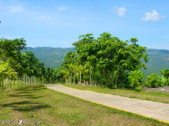
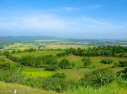
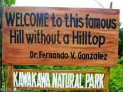

Kawa-kawa Hill and Natural Park is an ecotourism destination in Ligao City, Albay, Philippines. Kawa-kawa Hill is derived from the local dialect “kawa” or native cauldron resembling its crater. It is used to be called “lunad”, a Ligao term which means “sagging” or “depressed” and literally describes the six-hectare crater. Nowadays, people who climbed or trekked the hill described the crater as a huge amphitheater, a sliced-coconut and a hill without a hilltop. Although, it may look like an ordinary hill from afar but the uniqueness of it will be felt and appreciated when one is on top of the hill where calm winds and air breeze waits.
From Manila or Cubao, ride a bus going to Legazpi City and tell the driver or conductor to drop you off at Seventh Day Adventist Church in Tuburan, Ligao City. Upon arrival, ride a jeepney or tricycle going to Kawa-Kawa Hills. Travel time is around 10-12 hours depending on the traffic situation.